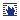
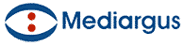

|  |
 |  |
Praktische tips voor KMO's
| Jean-Luc Manise | 20-03-2008 | Pag. 62 |

Een KMO heeft weinig middelen en weinig tijd, maar heeft evengoed als een groot bedrijf nood aan een degelijke business continuity oplossing. Hieronder vindt u een aantal simpele en directe tips om uw informatica voor een optimale prijs veilig te stellen.
Informeer het personeel Gegevens beschermen Back-up Bescherming aanpassen Website Outsourcing
Maak om te beginnen een evaluatie of laat een evaluatie maken van uw bestaande oplossingen en ga na hoe kwetsbaar die zijn, rekening houdend met uw kritieke processen. Stel dat u maar één server zou kunnen back-uppen, welke zou u dan kiezen: boekhouding, e-mail of e-commerce? Alles hangt af van wat cruciaal is voor uw onderneming. Als uw hoofdactiviteit de online verkoop is en iedere minuut onderbreking geld kost, moet u in de eerste plaats de e-business server en de internetaansluiting beschermen. In een business continuity plan moeten dus de IT-bronnen worden opgesomd die kritiek zijn voor uw bedrijfsactiviteit. Vervolgens gaat u te werk op basis van prioriteit. Daar bestaan hulpmiddelen voor. We denken aan Microsoft Security Assesment Tool, ExaProtect Management Solution of Avasco Security Assesment Software.
Om de securitykosten zo laag mogelijk te houden, legt u zich het beste toe op zaken die kans maken om aanvaard te worden in plaats van alle mogelijkheden in overweging te nemen. Het is waarschijnlijker dat een werknemer zijn wachtwoord op een stukje papier bewaart dan dat een ontevreden individu een aanval inzet op uw netwerk. Dat is nu juist een van de voordelen van een kleine of middelgrote onderneming: ze is minder zichtbaar dan een groot bedrijf. U heeft dus behoefte aan rationele strategieën en een directieteam dat de tijd wil nemen om zijn personeel duidelijk het waarom van die strategieën uit te leggen. Werknemers kunnen de grootste risicobron zijn, niet zozeer omdat ze het bedrijf kwaad willen berokkenen, maar uit onwetendheid . Het personeel moet dus opgeleid en geïnformeerd worden over de manier waarop security ook een rol speelt in hun dagelijkse activiteiten, zodat ze het bedrijf niet onbewust blootstellen aan risico's. Kwaad opzet moet worden aangepakt door middel van toegangscontrole tot gevoelige gegevens. Een product als SafeGuard Leak Proof van Utimaco doet dat in real time en op basis van vooraf bepaalde toegangsregels.
Kies in de eerste plaats voor een RAID-oplossing. De redundantiegraad van RAID-schijven beschermt de gegevens tegen de uitval van schijven, componenten of stroom. Vervolgens is het verstandig om een goedkoop opslagnetwerk uit te bouwen op basis van de i-SCSI technologie, ook wel de 'SAN van de armen' genoemd. Fibre Channel blijft weliswaar de onbetwiste leider op het gebied van hoogwaardige SAN-systemen, maar daarvoor moeten er op iedere server specifieke switches en een HBA-kaart ( Host Bus Adapter) worden geplaatst, plus er moet een vezelnetwerk en compatibele schijfbaaien worden geïnstalleerd. i-SCSI SAN-systemen berusten enkel op standaard IP-apparatuur en zijn minder duur: categorie 5 bekabeling, Ethernet switches en dito netwerkkaart. Bovendien kunt u virtualiseren. Een Ethernet switch kan daarbij zowel dienen om de client stations onderling te verbinden als om andere switches te verbinden. Tot slot is i-SCSI SAN makkelijker te beheren dan Fibre Channel netwerken, die specifieke hulpmiddelen (en competenties) vereisen. Kies voor low range SANs, die een virtualisatieomgeving bevatten. In veel gevallen is dat VMware. Alle majors in de schijf- en opslagindustrie (EMC, HP, IBM, Sun, Dell) en softwarebedrijven als Citrix of Microsoft stellen die voor. Virtualisatie heeft tal van voordelen. Het vereenvoudigt de serveradministratie en verhoogt de veiligheid. Een (virtuele) server verwijderen kan in enkele klikjes, zonder fysiek in het computerlokaal aanwezig te hoeven zijn. Het updaten van de systemen wordt erdoor vereenvoudigd. Het is ook mogelijk om een server te dupliceren, het origineel te corrigeren en vervolgens te vervangen. Het uitrollen van een nieuwe server kan op basis van een image en is makkelijker te beheren. De toewijzing van gecentraliseerde resources (processors, ram en schijven) gebeurt op verzoek. Een server en de gegevens die erop staan, zijn niet meer dan een eenvoudig bestand, dat heel eenvoudig te back-uppen is. Als er een toestel uitvalt, volstaat het om het om dit bestand te herstellen op een nieuwe machine. Updates en migraties kunnen plaatsvinden zonder de productie te onderbreken.
Kies voor back-upsoftware die al uw computers bestrijkt, de courantste besturingssystemen ondersteunt en rekening houdt met alle gegevens die nuttig zijn voor het herstel van PC's en servers bij uitval. De back-upsoftware moet zowel desktopcomputers als notebooks behandelen, alsook stuurprogramma's van randapparaten, applicaties en gebruikersparameters. Als er zich een probleem voordoet, mag u geen uren bezig zijn met het zoeken naar bestanden, het laden van CD's, het installeren van applicaties en het herinstellen van gebruikersprofielen. Tape back-ups zijn traag. Voor de dagdagelijkse back-up is een schijf sneller. Om de gegevens te archiveren volstaat het dan om ze van de schijf te kopiëren naar een tapeset, zonder storing of nadelen voor het netwerk of de gebruikers. Voorzie twee tapesets: een om intern te bewaren en een die u voor de veiligheid buiten het kantoor bewaart, zodat u daarop kunt terugvallen in geval van overstroming of brand. Voor de externe tapes kiest u best een encryptiesysteem zoals AES 128 of 256 BIT. Steeds vaker moeten KMO's aan hun grote opdrachtgevers bewijzen dat de back-upgegevens beschermd zijn tegen toegang door personen of software met verkeerde bedoelingen. AES-encryptie beantwoordt aan die verzuchtingen.
Antivirus, spyware en firewall voor PC's en notebooks, antivirus en antispam voor mailservers, firewall en inbraakdetectie voor servers en netwerken en eventueel DMZ voor de afscherming van de internettoegang zijn geen overbodige luxe. Gooi ondoeltreffende, geïsoleerde of redundante applicaties overboord: een bedrijf met twee gratis antivirussen en één antivirus met een licentie die niet vernieuwd is, vormt een ideaal doelwit voor allerlei malware. Een doeltreffend beheer van patches en updates is onmisbaar voor de beveiliging van de IT-omgeving van bedrijven tegen bekende en exploiteerbare lekken. Houd rekening met steeds meer gebruikte, mobiele apparatuur. De VPN-technologie komt hier volkomen tot haar recht want die omvat een beveiligd en versleuteld authenticatiesysteem. Kies mobiele randapparaten die bij verlies of diefstal een signaal sturen naar de server waarvoor ze geconfigureerd zijn, waardoor het besturingssysteem van het mobiele toestel onbruikbaar wordt. Een andere mogelijkheid is de versleuteling door middel van software zoals SafeGuard Easy van Utimaco. Die vercijfert alle gegevens van de notebook (of de PC) vóór de opstart van het besturingssysteem. Zonder wachtwoord en User ID, is het onmogelijk om wat dan ook aan te vangen. Resultaat bij diefstal (of verlies): de computer is onbruikbaar behalve wanneer hij geherformatteerd wordt, dus zonder de kostbare gegevens te hebben kunnen lezen.
InterVista, dat vorig jaar door Nivel-invest en Solvay Business School gelauwerd werd als meest innoverende onderneming van Waals-Brabant, stelt een oplossing voor om websites online te monitoren. De toegevoegde waarde ten opzichte van andere telebewakingssystemen is dat de facturering gebaseerd is op de te bewaken URL en de controlefrequentie: de prijs gaat van 80 cent per maand voor een controle om het uur tot 60 euro per maand voor een monitoring per minuut. Als er zich een probleem voordoet, wordt de klant automatisch verwittigd via e-mail of sms. Het laatste luik van de service betreft de activiteitenverslagen in verband met het prestatieniveau van de website. Die maken het mogelijk om eventueel op de problemen vooruit te lopen. Medeoprichter Christophe Darville: "De meeste, moderne websites zijn dynamisch of omvatten een databank. Ze geraken dan ook sneller in de problemen en zijn gevoeliger voor bugs. Activiteitenverslagen kunnen het mogelijk maken om actie te ondernemen vóór de crash of om de servercapaciteit tijdig op te voeren." Het product mag 30 dagen gratis uitgetest worden.
Netwerkbeveiliging, identiteitsbeheer, inbraakdetectie en bescherming tegen virussen en malware... het kan de KMO allemaal wat te veel worden. Het beheren van de security neemt tijd in beslag en vergt aandacht, die dus ondertussen niet besteed kan worden aan andere, meer strategische informatica-activiteiten. Als de mensen die verantwoordelijk zijn voor het dagdagelijkse beheer van de informatica ook moeten instaan voor de veiligheid, is het mogelijk dat ze niet genoeg tijd hebben om die tweede taak helemaal ter harte te nemen. In zo'n geval kan het aangewezen zijn om aan (selectieve) outsourcing te denken. Er worden - gestructureerde en beproefde managed security services aangeboden bij leveranciers als Computacenter, MSP, Saphico en Systemat.
© 2008 Roularta Media Group